Self-Revising Discovery Systems for Science: A Categorical Framework for Agentic Artificial Intelligence
这篇论文把“AI 科学发现”从生成答案或固定空间搜索中拆出来：真正的 discovery 是对证据、artifact、operation、tool、verifier 所属的 representational regime 做经验证的修订。作者用 category theory 给出一套工程可审计语言：固定 regime 内是 copresheaf state 的更新；发现则是 schema functor $u:S_b\to S_{b'}$、left Kan extension $\operatorname{Lan}_u I_t$、preservation map $\rho$ 和 residual content 的组合。
1. 研究动机：为什么“发现”不是“搜索得更久”
作者针对的不是普通 LLM summarization 或 benchmark optimization，而是 agentic science system 里更难审计的一步：当新证据迫使系统发明新变量、新 artifact type、新 verifier、新 tool class 或新的复合操作时，如何记录这一步不是胡乱改 prompt，而是经 gate 认证的 regime revision。
Retrieval
从已有 corpus 里取回一个已经能在当前 schema 中表达的 typed artifact。它可能很有用，但没有改变 admissible vocabulary。
Search
在固定 schema $S_b$ 内组合已有对象和 morphisms，找到新的路径、模型或参数。搜索可以很复杂，但仍在同一 regime 内。
Discovery
把 regime $b$ 扩展或重构为 $b'$：新类型、新 morphism、新 verifier、新 grammar production 或新 tool class 进入可接受科学状态。
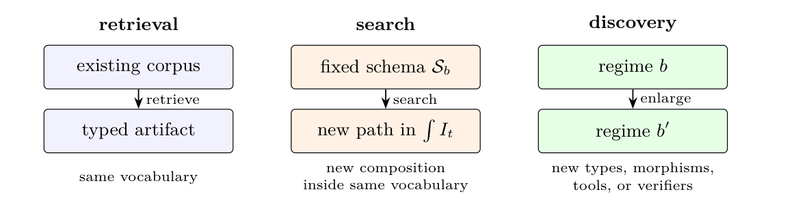
| 科学系统里的工程对象 | 范畴论对象 | 为什么重要 |
|---|---|---|
| artifact type，例如 PDBChain、ContactGraph、SymbolicDAG、Report | schema category $S_b$ 的 object | 声明系统允许产生和承诺的科学对象类型。 |
| tool / skill signature，例如 build contact graph、fit symbolic DAG | $S_b$ 的 morphism | 声明从一种 artifact 到另一种 artifact 的可审计转换。 |
| 当前 artifacts 总账 | copresheaf $I_t:S_b\to\mathbf{Set}$ | 每个 type 上有一组实际 artifacts；operation 对应集合之间的映射。 |
| artifact DAG / hypergraph | category of elements $\int_{S_b} I_t$，或 multicategorical provenance analogue | 把“这个结论怎么来的”变成 typed provenance graph，而不是聊天记录。 |
| accepted update | natural/refinement morphism | 旧证据必须被保留、可查询、可解释，不能被 silently overwritten。 |
| gate / verifier | predicate、scoring functional 或 commitment rule | 决定 artifact 是 accepted、rejected、superseded 还是 held for review。 |
| new schema/tool/verifier | regime extension $u:S_b\to S_{b'}$ | 这是 discovery 的形式化边界：系统不只在旧 vocabulary 里优化。 |
Table 1 的中文重构：论文把 agentic science 的工程总账映射到 category-theoretic formalism。这个字典是后面 Kan audit 的基础。
2. 方法：从 typed artifacts 到 verified regime transition
论文的数学贡献是把 discovery 定义为“旧证据可保存地运到新 schema，同时新状态包含超出 transport 的 accepted residual”。关键对象是 discovery regime、artifact-state copresheaf、fixed-regime update、verified regime transition 和 Kan obstruction。
2.1 Discovery regime
一个 discovery regime 是四元组：
$$b=(S_b,\Gamma_b,V_b,L_b).$$$S_b$ 是 artifact types 与 allowed operations 的 small schema category；$\Gamma_b$ 是可组合 artifacts 或 model structures 的 grammar；$V_b$ 是 verifier/gate；$L_b$ 是 optional description-length functional。这里的 regime 不只是 ontology，也包含能否接受、如何评分、如何组合的承诺。
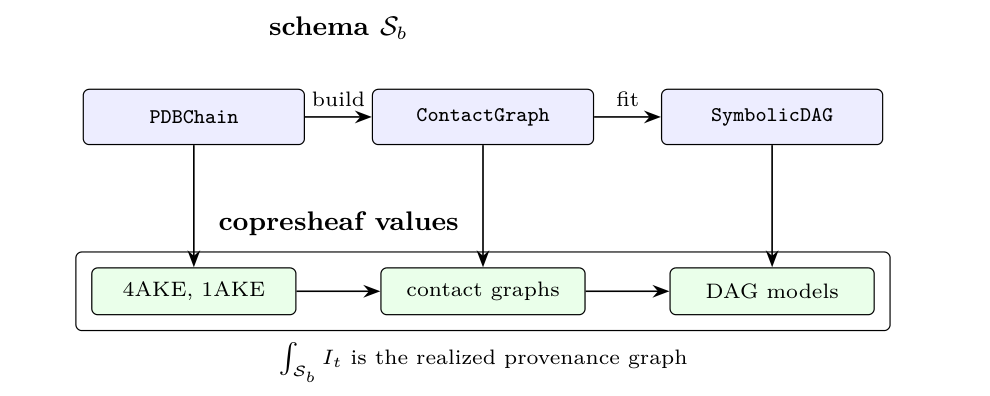
Artifact-state copresheaf
固定 regime $b$ 下，时间 $t$ 的科学状态是 covariant Set-valued functor：
$$I_t:S_b\to\mathbf{Set}.$$每个 type $A$ 上的 $I_t(A)$ 是当前 artifacts 集合；每个 operation $f:A\to B$ 上的 $I_t(f):I_t(A)\to I_t(B)$ 记录一个 artifact 如何生成另一个 artifact。category of elements 的对象是 $(A,x)$，morphism 是满足 $I_t(f)(x)=y$ 的 $f:(A,x)\to(B,y)$。
2.2 Fixed-regime update：搜索不是发现
设 $K_b$ 是 $S_b$ 上 artifact-state copresheaves 与 provenance-preserving refinements 组成的 category。固定 regime 内的 agentic update 是：
$$\Phi_b:\operatorname{Obj}(K_b)\to\operatorname{Obj}(K_b).$$只有当它把 refinement morphisms 映到 refinement morphisms，并保持 identity 与 composition 时，才能称为 endofunctor $\Phi_b:K_b\to K_b$。因此 search 是反复应用 $\Phi_b$；它不能产生 $S_b$ 外的新 type、new verifier、new grammar production 或 new tool class。
2.3 Verified regime transition
发现需要从旧 schema 到新 schema 的 functor：
$$u:S_b\to S_{b'}.$$旧 artifact state 通过 left Kan extension 被 transport 到新 schema：
$$\operatorname{Lan}_u I_t:S_{b'}\to\mathbf{Set}.$$同时必须显式给出 preservation natural transformation：
$$\rho:I_t\to u^\ast I'_{t+1}.$$由 adjunction $\operatorname{Lan}_u\dashv u^\ast$，$\rho$ 唯一对应 comparison map：
$$\bar{\rho}:\operatorname{Lan}_u I_t\to I'_{t+1}.$$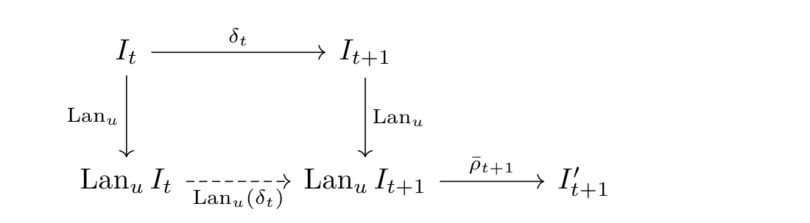
2.4 Kan obstruction：transport-only 不能填充孤立新类型
对新 schema 中的对象 $A'$，left Kan extension 的 pointwise 形式是：
$$(\operatorname{Lan}_u I_t)(A')\cong \operatorname*{colim}_{(uA\to A')\in(u\downarrow A')} I_t(A).$$如果 comma category $(u\downarrow A')$ 为空，则：
$$(\operatorname{Lan}_u I_t)(A')=\varnothing.$$若新状态 $I'_{t+1}(A')$ 非空，则这些 artifacts 不可能来自旧 regime 的 functorial transport。论文把 objectwise diagnostic 写成：
$$R(A')=I'_{t+1}(A')\setminus\operatorname{im}(\bar{\rho}_{A'}).$$有 relative description-length functional 时，discovery cost 是：
$$L_{b'}\left(I'_{t+1}\mid\operatorname{im}(\bar{\rho})\right).$$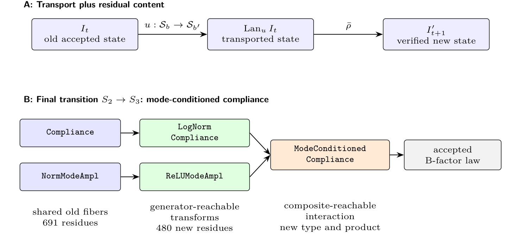
3. 两个实例系统：Builder/Breaker 与 CategoryScienceClaw
论文不是只给纯理论定义，而是用两个系统说明如何在工程记录里落实“旧证据保存 + 新 regime 残差”。Builder/Breaker 是蛋白力学 symbolic DAG discovery，gate 是 paired MDL；CategoryScienceClaw 是 ScienceClaw 的 categorical/proof-carrying layer，主例是 fiber-network mechanics，gate 是 AIC 与 diagnostics。
Builder/Breaker protein mechanics
- Breaker 选择新的蛋白证据来暴露当前 symbolic world model 的失败模式。
- Builder 提出 symbolic DAG edits，例如添加/移除 factors、交换 terms、调整 threshold。
- gate 是 Minimum Description Length：候选必须在同一 accumulated evidence 上经 paired refitting 后降低总描述长度。
- 底层物理 features 来自 PDB chains、Cα coordinates、contact graphs、Kirchhoff matrices、GNM spectra、compliance、slow-mode observables 与 B-factor targets。
CategoryScienceClaw
- ScienceClaw 提供 typed skill registry、immutable artifacts、open needs、pressure/overlap coordination、active graph mutation。
- Infinite 把 computational artifacts 发布成 public discourse objects，带 links、votes、comments、reputation 与 moderation signals。
- CategoryScienceClaw 把 skills 当作 morphism signatures，把 artifacts 当作 typed objects，把 open needs 当作 typed holes，把 gates/stress tests/certificates 变成 proof-carrying audit records。
- 主文使用 fiber-network mechanics；SI 还给出 7T10、mechanobiology、membrane mechanics cases。
3.1 Builder/Breaker 的 MDL gate
候选 symbolic DAG $M'$ 只有在同一 accumulated evidence $D$ 上比 incumbent $M$ 更短时才被接受：
$$L(M,D)=L_{\mathrm{model}}(M)+L_{\mathrm{data}}(D\mid M).$$ $$V_b(M',M;D)=1\Longleftrightarrow L_{\mathrm{model}}(M')+L_{\mathrm{data}}(D\mid M')\lt L_{\mathrm{model}}(M)+L_{\mathrm{data}}(D\mid M).$$如果 Breaker 添加 stress-test evidence $E$，比较仍是 paired：$M$ 与 $M'$ 都在 $D\cup E$ 上 refit 和评分。这就是为什么非单调 $R^2$ 不能直接被读作失败；每一轮 evidence set 已经变了。
3.2 GNM features 与最终 B-factor law
对 protein chain $p$ 的 residue coordinates $r_{pi}\in\mathbb{R}^3$，接触图与 Kirchhoff matrix 为：
$$A^{(p)}_{ij}=\mathbf{1}\{i\ne j,\|r_{pi}-r_{pj}\|\lt r_c\},\qquad r_c=10.0\,\text{\AA}.$$ $$ \Gamma^{(p)}_{ij}= \begin{cases} -A^{(p)}_{ij}, & i\ne j,\\ \sum_{k\ne i}A^{(p)}_{ik}, & i=j. \end{cases} $$对 $\Gamma_p u_{pk}=\lambda_{pk}u_{pk}$，residue $i$ 的 all-mode compliance 是：
$$C_{pi}=(\Gamma_p^+)_{ii}=\sum_{\lambda_{pk}\gt0}\frac{u_{pik}^2}{\lambda_{pk}}.$$目标是 chain-normalized crystallographic Cα B-factor：
$$B^{(z)}_{pi}=\frac{B_{pi}-\bar{B}_p}{s_{B,p}}.$$令 $z_p(\cdot)$ 为 per-chain z-score，最终被 MDL 接受的 features 和 law 是：
$$\phi_{pi}=z_p(\log(C_{pi}+\epsilon)),\qquad \psi_{pi}=[z_p(|u_{pi2}|)+\theta]_+.$$ $$\hat{B}^{(z)}_{pi}=\alpha+\beta\phi_{pi}\psi_{pi},\qquad \alpha=-0.1332,\ \beta=0.2239,\ \theta=2.2678.$$机械解释是：within-chain B-factor pattern 更像 all-mode elastic compliance 被 slow collective-mode participation 条件化，而不是 compliance 与 normal-mode effect 的简单 additive stack。
3.3 CategoryScienceClaw fiber-network mechanics
fiber orientation $\theta_i$ 给出单位方向 $n_i=(\cos\theta_i,\sin\theta_i)$，orientation tensor 为：
$$A=\frac{\sum_i w_i n_i n_i^T}{\sum_i w_i}.$$scalar nematic order parameter、anisotropy ratio 与 stress-strain surrogate 为：
$$S=\sqrt{\langle\cos2\theta\rangle^2+\langle\sin2\theta\rangle^2},\qquad \chi=\frac{\lambda_{\max}(A)}{\lambda_{\min}(A)}.$$ $$\sigma=E\epsilon+\sigma_0.$$该案例报告 $S=0.673115$、principal orientation $47.877581^\circ$、stiffness $E=119.4\,\mathrm{kPa}$、linear stress-strain fit $R^2=0.999989$。candidate gate 比较 isotropic fiber-count descriptor $M_0$ 与 orientation-tensor anisotropic stiffness surrogate $M_1$：
$$\text{accept }M_1\text{ over }M_0\Longleftrightarrow \mathrm{AIC}(M_0)-\mathrm{AIC}(M_1)\gt0\text{ and diagnostics pass}.$$最终 $M_1$ accepted、$M_0$ rejected，$\Delta\mathrm{AIC}=123.873782$。
4. 结果：发现表现为压缩、撤回和新复合类型
最重要的结果不是“模型分数单调上升”，而是 accepted world model 在证据扩张后仍能用更紧凑的 symbolic vocabulary 解释数据。论文特别强调 retraction：旧 model commitments 可以被 superseded，但旧证据与 provenance 不能消失。
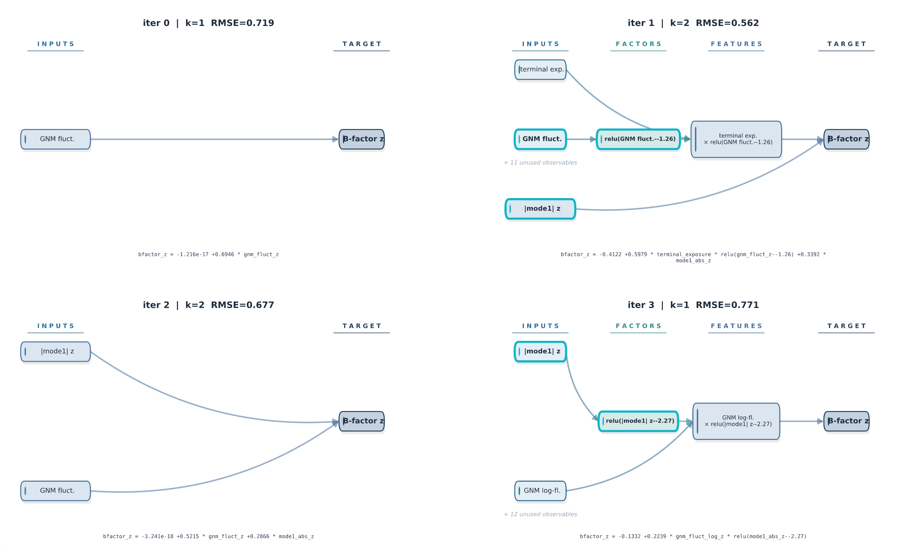
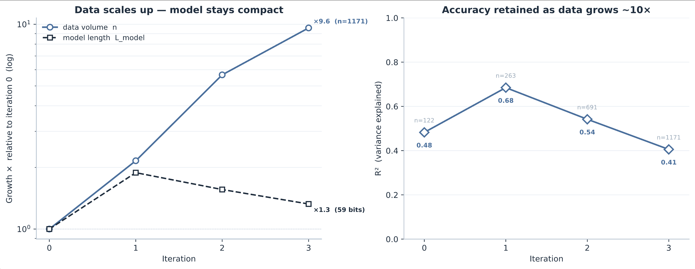
| Transition | Break type | Generator-reachable new types | Composite-reachable new types | Retracted types | $\Delta L_{\mathrm{model}}$ | MDL gain |
|---|---|---|---|---|---|---|
| 0 → 1 | regime split | ReLU compliance; terminal exposure | boundary product | old linear parameters | +39.1 bits | +9.0 bits |
| 1 → 2 | ontology break | none beyond shared GNM base | none beyond shared GNM base | terminal and boundary feature family; old parameters | -14.4 bits | +37.3 bits |
| 2 → 3 | regime split | log-compliance; ReLU mode amplitude | mode-conditioned compliance | additive-model parameters | -10.3 bits | +54.3 bits |
Table 2 重构：最终发现不是 normal mode 或 compliance 本身，而是允许 $\mathrm{LogNormCompliance}\times\mathrm{ReLUModeAmpl}\to\mathrm{ModeConditionedCompliance}$ 的新复合类型与 product operation。
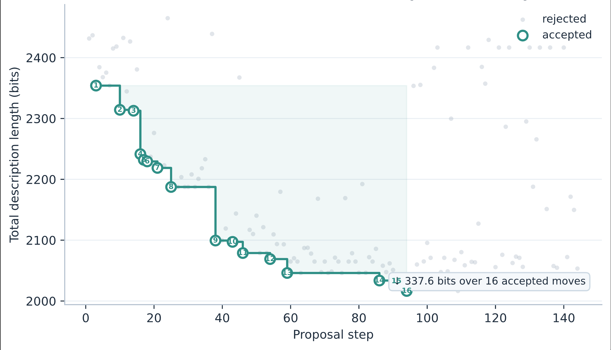
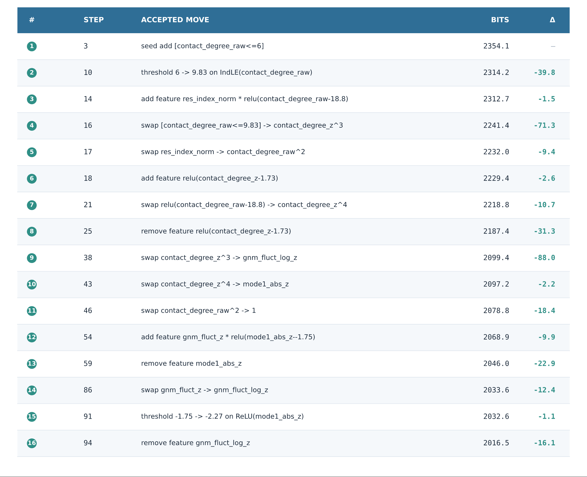
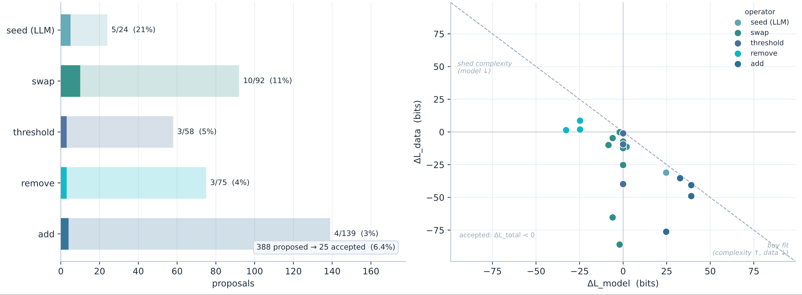
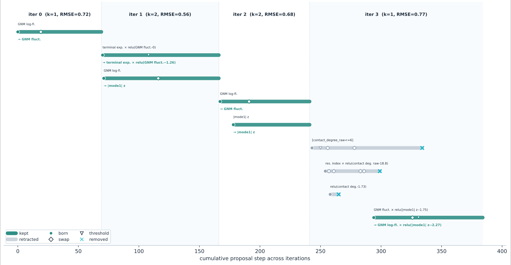
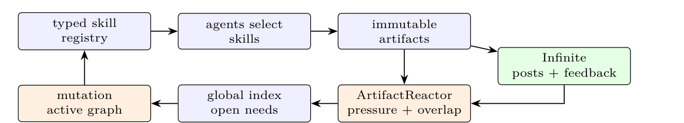
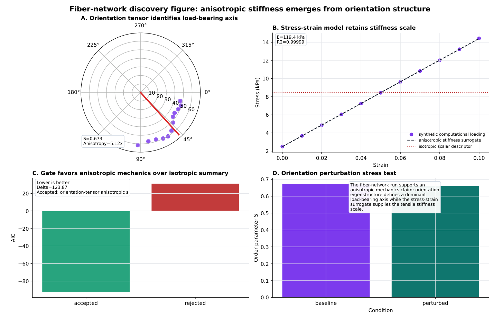
| 系统/案例 | Artifact regime | Gate 或 verifier | Discovery-relevant mechanism |
|---|---|---|---|
| ProtAgents | protein sequences, structures, force/dynamics artifacts | agent critique plus physics and ML tool outputs | physics simulators expose failure modes of generated designs |
| MARS / graph agents | layered material knowledge graphs and substitution candidates | feasibility, manufacturability, cross-source consistency | heterogeneous evidence 的 cross-layer composition |
| Sparks / SciAgents | research goals, hypotheses, code, results, reports | novelty, interestingness, executable results | ideation-to-experiment loop over research-artifact schema |
| Builder/Breaker | protein-mechanics evidence and symbolic DAG world models | paired MDL compression | adversarial evidence forces retractions and regime enlargement |
| ScienceClaw × Infinite + CategoryScienceClaw | execution artifacts, open needs, discourse posts, categorical objects, morphisms, lineage, gates, figures, reports | pressure scoring, schema overlap, mutation status, discourse feedback, reputation, proof certificates | plannerless artifact exchange plus public claim verification, lifted into typed categorical provenance |
Table 3 重构：论文把若干 AI-for-science/agentic systems 都读成 typed artifact systems，而不是按 leaderboard 排名。
5. Figure / Table 导航
本页已纳入论文主文 Figure 1-10 的关键图像或裁图，并重构 Table 1-3。Supplementary figures 由于 PDF 图片抽取不稳定，主要以 Table S1 的数值和文本形式整合。
| 编号 | 本页位置 | 读图重点 |
|---|---|---|
| Figure 1 | 动机 | retrieval / search / discovery 的结构差异。 |
| Figure 2-4 | 方法 | copresheaf provenance、fixed-regime transport、Kan audit 与 residual content。 |
| Figure 5-8 | 结果 | Builder/Breaker 的 DAG scaling、inner MDL search、gate anatomy、feature lifecycle。 |
| Figure 9-10 | 结果 | ScienceClaw × Infinite 的 typed artifact loop，以及 fiber-network mechanics 的 AIC-gated discovery graph。 |
| Table 1 | 动机 | implementation terms 到 category formalism 的字典。 |
| Table 2 | 结果 | Builder/Breaker transitions 的 generator/composite reachability、retractions、MDL gain。 |
| Table 3 | 结果 | 多个 agentic systems 的 artifact regime、gate 与 discovery mechanism 对照。 |
6. 复现清单与限制
论文提供了多个代码仓库和 generated artifacts/logs，但严格复现仍依赖具体 LLM 后端、artifact export tree、PDB/力学数据处理、MDL/AIC gate 实现与论文中的后处理审计脚本。本页只基于论文和 PDF 提取，不假定仓库在 2026-06-10 的状态已被外部验证。
可用资源
- Builder/Breaker protein-mechanics code, generated artifacts, logs, figures:
https://github.com/lamm-mit/BreakingTheWorld - ScienceClaw framework:
https://github.com/lamm-mit/scienceclaw - CategoryScienceClaw mechanics branch:
https://github.com/lamm-mit/scienceclaw/tree/categoryscienceclaw-mechanics - Infinite discourse platform:
https://github.com/lamm-mit/infinite
关键不确定性
- Builder/Breaker 论文说明使用 GPT-5.5 (OpenAI)，extended reasoning enabled，
reasoning_effort=high。 - CategoryScienceClaw studies 使用 GPT-5.2 (OpenAI) 作为 backbone LLM。
- 这些后端、版本、推理设置、随机性和 prompt traces 是复现实验行为的核心外部依赖。
- MDL gains 是 paired acceptance gains，不等同于完整的 relative discovery cost $L_{b'}(I'_{t+1}\mid\operatorname{im}(\bar{\rho}))$。
| 复现目标 | 需要准备 | 验收点 |
|---|---|---|
| Builder/Breaker final law | PDB chain evidence、Cα coordinates、contact graph cutoff $r_c=10.0\,\text{\AA}$、GNM eigenvectors/eigenvalues、B-factor target、symbolic DAG search logs | 重建 $\hat{B}^{(z)}_{pi}=\alpha+\beta\phi_{pi}\psi_{pi}$，并验证 $\alpha=-0.1332$、$\beta=0.2239$、$\theta=2.2678$ 与 MDL acceptance。 |
| Kan audit Table 2 | 每轮 accepted world-model records、finite schema $S_t$、shared/new objects、unary generators、multi-input product morphisms、residue counts 122/263/691/1171 | 复现 generator-reachable、composite-reachable、retracted types、$\Delta L_{\mathrm{model}}$ 与 MDL gains。 |
| Inner MDL search | 388 proposals、operator labels、accepted/rejected status、每次 accepted state 的 model/data code length | 得到 25/388 accepted，iteration 内 16/144 accepted，total description length 2354.1→2016.5。 |
| CategoryScienceClaw fiber network | fiber orientations/weights、stress-strain table、candidate model records、AIC gate、diagnostics、perturbation stress test | 复现 $S=0.673115$、orientation $47.877581^\circ$、$E=119.4\,\mathrm{kPa}$、$R^2=0.999989$、$\Delta\mathrm{AIC}=123.873782$。 |
| ScienceClaw provenance layer | artifact ledger、type metadata、skill labels、parent lists、content hashes、open needs、mutation status、public discourse objects | 验证 artifacts 形成 typed acyclic hypergraph；accepted/rejected/gate/stress-test/report 都可追溯到 input artifacts 与 morphisms。 |
| SI case | Accepted model | Rejected model | Gate/result |
|---|---|---|---|
| 7T10 structure-contact mechanics | linear force-extension model | mean-force null model | AIC improvement 69.50；stiffness 253.068938 pN nm^-1；peak force 766.98959 pN at 2.4 nm；$R^2=0.942723$。 |
| Mechanobiology force paths | full force-path regression | adhesion-only traction model | mean load-path score 4.421814 Pa µm^-1；max traction 72.886 Pa；adhesion-only $R^2=0.398862$；full model $R^2=1.000$。 |
| Membrane biophysics | Helfrich-style curvature-energy proxy | curvature-only shape descriptor | RMS curvature 0.15471241 µm^-1；mean energy proxy 0.23935931 kBT µm^-2；total grid energy proxy 11.72860601 kBT。 |
Supplementary Table S1 的压缩版：这些案例主要用于说明 provenance 与 gate 的保留方式，不应被过度解读为独立 empirical validation。
7. Reviewer Critique
这篇论文的价值在于给 agentic AI for science 提供一套可审计语言，但它的证据形态仍偏 case study 与系统哲学，离通用 benchmark 或独立复现实验还有距离。
Strengths
- 清楚区分 retrieval、fixed-schema search 和 regime-changing discovery，避免把所有 agent improvement 都叫“发现”。
- 用 copresheaf、category of elements、Kan extension 和 comparison map 给 provenance 与 novelty 提供了非主观定义。
- Builder/Breaker 案例把 retraction、compression、accepted/rejected moves 和 MDL gate 具体化，不只展示最终公式。
- CategoryScienceClaw 把 skill registry、artifact ledger、open needs、public discourse 和 gate 都纳入 typed artifact graph，工程启发强。
Weaknesses
- 范畴论形式化门槛高，且部分读者会质疑是否比更朴素的 typed provenance / schema migration language 多带来可操作收益。
- 两个核心案例都来自同一研究生态，缺少独立系统、不同科学领域和第三方 reproducer 的压力测试。
- Builder/Breaker 与 CategoryScienceClaw 分别依赖论文所述 GPT-5.5 / GPT-5.2 后端，严格复现实验行为的外部依赖很强。
- CategoryScienceClaw 的机制案例更像 deterministic computational provenance demonstration，不等价于真实 wet-lab 或 large-scale scientific validation。
Missing Ablations
- 没有系统比较“范畴论 Kan audit”与普通 versioned schema/provenance audit 在发现识别上的差异。
- 缺少 MDL gate 与 AIC/BIC、cross-validation、Bayesian model selection、human review gate 的对照。
- 缺少固定 schema symbolic search 与 regime transition search 的直接实验对比。
- GNM cutoff $r_c=10.0\,\text{\AA}$、feature grammar、threshold parameterization、protein evidence selection 的敏感性分析仍不足。
Failure Modes
- false regime transition：系统把局部过拟合包装成新类型或新 verifier。
- gate overfitting：MDL/AIC gate 与 artifact grammar 共同偏向某类“看起来可压缩”的表达。
- artifact explosion：typed ledger 变大后，Kan audit 与 provenance 查询可能成为系统瓶颈。
- schema brittleness：一开始的 type system 设计会决定哪些 residual 能被看见，哪些 failure 会被错误归类。
- transport preserves bad evidence：旧证据被 faithfully transport 不代表旧 evidence quality 是可靠的。
8. 对 agent / RLVR / 自进化研究的启发
如果把这篇论文转成 agent 工程语言，它的核心建议是：不要只优化 policy 或 prompt；要把 memory、tools、verifiers、artifacts、失败证据和 rejected alternatives 都放在 typed schema 里，并让“自我改进”成为可验证的 schema transition。
把 replay 变成 preservation map
自进化 agent 每次升级后，应显式给出旧 trajectories、tools、memories、test cases 在新系统中的对应关系 $\rho:I_t\to u^\ast I'_{t+1}$，而不是只报告新分数。
把 novelty 变成 residual
新能力不应只由 benchmark delta 定义，而应看它是否产生了旧 schema transport 无法解释的 accepted artifacts、operations 或 verifiers。
保留 rejected alternatives
RLVR / tool-use agent 的失败 proposals、被拒绝工具、无效 verifier 和 superseded prompts 应作为 typed artifacts 保留，供后续 gate 与 audit 查询。
gate 不等于 reward
reward 可以驱动探索，gate 决定 commitment。科学发现系统需要区分 candidate generation、evidence stress test、commit/reject/supersede 这几种状态。
工具库是 schema，不是插件列表
tool signature、输入输出类型、side effects、verifier、provenance metadata 共同定义 agent 能搜索的空间。新增工具应该被视为 regime extension。
压缩与撤回同样是进步
自进化系统不应奖励单调增加 rules/memories/tools。更好的系统会在更宽 evidence set 下删掉不再付费的 commitments。